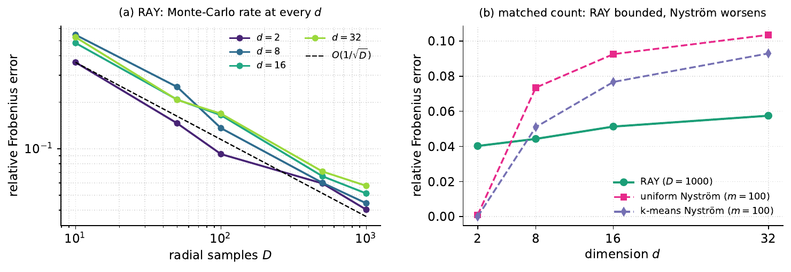
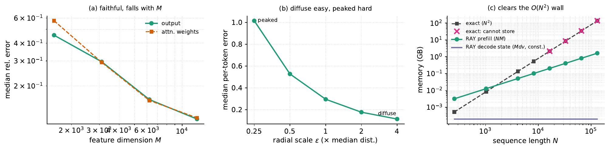
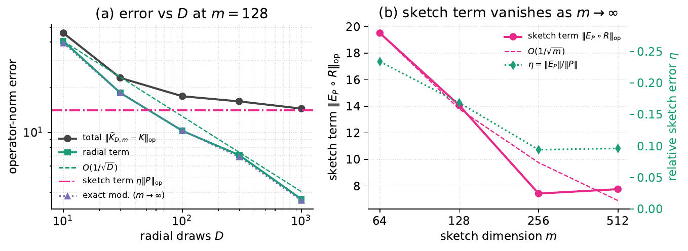
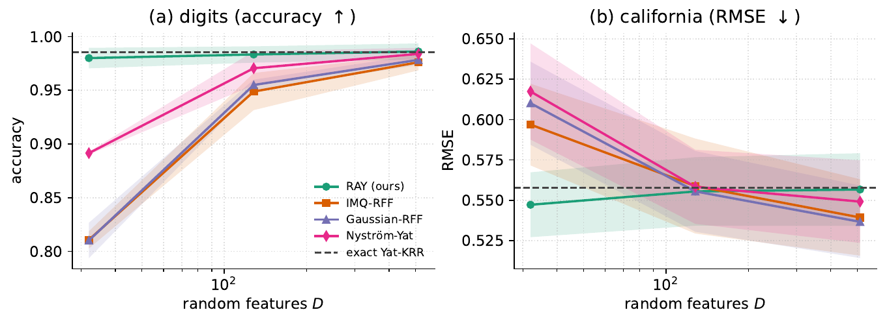

Azetta AI
Bernstein–Schur kernels are products of a finite-feature kernel and a completely monotone shift-invariant kernel: nonstationary kernels that fall between the shift-invariant and dot-product templates random features usually exploit, so in general neither Bochner sampling nor polynomial sketching applies to the full kernel directly. We give one random-feature construction for the whole class that randomizes both factors: it sketches the finite modulation and randomizes the completely monotone radial factor by sampling its one-dimensional Bernstein–Widder scale and applying Gaussian random Fourier features. The feature dimension becomes \(Dm\), free of the \(O(d^2)\) size of the exact-modulation feature. Keeping the modulation exact is the analyzable limit (\(m\to\infty\)): there we prove unbiasedness, an exact variance for the flat estimator, an intrinsic-dimension matrix-Bernstein operator-norm bound, and a deterministic kernel-ridge stability result. By conditioning on the sketch, the doubly-randomized estimator (RAY) inherits the same operator-norm guarantee plus a single additive sketch term. The motivating instance is the biased ⵟ-kernel above, whose family span contains the inverse-multiquadric kernel; experiments validate the construction off-sphere, isolate the alignment×proximity coupling, and turn RAY into a linear-time, streaming attention primitive that the exact kernel cannot scale to and a landmark method cannot stream.
Identify Bernstein–Schur kernels and linearize the whole family with one unbiased estimator: keep the finite modulation exact, sample the radial Bernstein–Widder scale, apply random Fourier features.
An exact variance for the flat estimator, a proof that one frequency per scale is variance-optimal at fixed budget, and a norm- and bias-free normalized variant.
An intrinsic-dimension matrix-Bernstein bound governed by the top eigenvalues — not the crude \(N\max_{ij}\) route — and a deterministic relative-spectral kernel-ridge perturbation bound.
Sketching the modulation drops the feature dimension to \(Dm\). Conditioning on the sketch carries the operator-norm guarantee over, plus a single tunable additive term.
The \(O(1/\sqrt D)\) rate, the \((R^2+b)^4\) bias law, the off-sphere niche where Nyström degrades with \(d\), a controlled coupled-target preference test, and a linear-time streaming attention primitive.




@article{bouhsine2026bernsteinschur,
title = {Bernstein--Schur Kernels: Random Features by
Sketched Modulation and Radial Randomization},
author = {Bouhsine, Taha},
year = {2026},
note = {Code: https://github.com/mlnomadpy/ray}
}